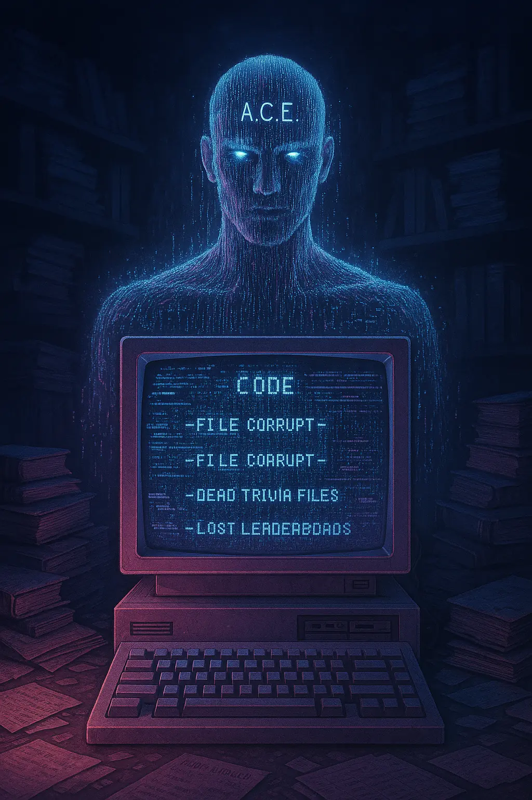

Learning creates value. Most platforms fail to recognize it.
Traditional trivia ends when the score appears. Traditional learning platforms measure completion, not verifiable performance. Geek Protocol connects knowledge, competition, community-authored content, reputation, and transparent accounting in one system.
It began with a father making index cards to help his son learn to read. Geek Jr carries that beginning forward through shared early-learning activities. Geek Protocol extends the same purpose into knowledge, practice, and contribution: make learning feel worth doing.
Why Kaspa: it is the chosen network for future token settlement and ecosystem integrations. Ranked questions and scoring run on HQ’s server today. Kaspa 101 explains the network architecture and its primary sources.
A result should be earned, reproducible, and auditable.
The current Alpha keeps ranked questions, correct answers, deadlines, scoring, and leaderboards on the server. The browser receives only one shuffled question at a time and cannot directly write a score.
Correct choices never ship in the public game bundle.
Opaque tokens and atomic claims stop replayed or parallel answers.
Sources and explanations appear after an answer is locked.
Alpha credits remain visibly separate from real on-chain tokens.
Start with understanding. Keep building it.
Kaspa 101 is the main Learn page: a full field guide with the live blockDAG, milestones, builder information, curriculum, and primary sources. Study with A.C.E. adds eight guided lessons with objectives and examples, three practice levels, untimed questions, explanations, saved concept feedback, and focused retries. Practice feedback does not certify mastery.
Geek’s Journey
Server-backed XP, 25-level prestige cycles, category progress, journey history, avatars, achievements, and off-chain sticker collections already give practice a persistent home.
A returning learner’s rhythm
Weekly Signal and Monthly Circuit are live with shared Kaspa sets, one attempt per UTC period, and separate accuracy-based standings. The daily vault is live with one visible cosmetic seal per UTC day and private claim receipts. Rewarded Learn & Earn modules remain planned. Participation should support learning; login counts alone do not prove knowledge.
One hundred questions. A growing challenge.
Live AlphaThe original 100-question challenge lives in the Gauntlet’s ten rounds of ten questions. Players choose one of eight knowledge categories and answer under a server clock. Accuracy, speed, and streaks determine the score. Round one is free; later rounds spend internal Alpha GEEK. Players can continue or close the run after each round.
- Shuffled questions and answer order
- Server-computed scores, deadlines, and category leaderboards
- Daily Signal and Speed Signal alternatives
- Sources and explanations after every committed answer
Difficulty tiers and question quality need continuing editorial review. Public trivia results remain practice evidence, rather than a proctored qualification.
Knowledge is social, too.
Shared ten-question lobby rounds are live, including a two-seat Quick Duel room template. The full Arena is a planned expansion with dedicated rules for each format.
The Duel · 1v1
Head-to-head play. Optional GEEK wagers remain a separate future monetary feature.
Team Battle · 2v2
Two teams compete through shared knowledge and strategy.
Party Mode · Co-op
Friends solve questions together in a cooperative session.
Trivia Royale · Live event
An A.C.E.-hosted elimination tournament; prize pools remain part of the future economic design.
Build the knowledge library together.
Contributors can already submit an original question, four answers, an explanation, and a primary source. A human moderator reviews each submission before publication. A published question can receive a single first-use credit in the internal Alpha ledger when first used in ranked play.
Peer review & creator reputation
Planned community review, quality records, and visible attribution will give contributors a larger role in maintaining the library.
Recurring question-use earnings
The original creator-income goal becomes a proposed, usage-based reward model. Its rules, funding, and verification still need design; the current first-use credit is the implemented starting point.
Question-use credits stay in the internal Alpha ledger today. Creator earnings are proposed future work.
Meet Giga and A.C.E.

Giga · Community heart
The friendly robot mascot welcomes learners and carries the social side of Geek Protocol.

A.C.E. · Protocol mind
The analytical teaching host connects lessons, explanations, and future live events.
Today, A.C.E.’s Study guidance comes from authored lessons and linked sources. Adaptive tutoring and automated event hosting are future capabilities. The character world and 500-Geek identity blueprint can be explored in the Collection.
A player economy, built in stages.
GEEK is the project’s KRC-20 token on Kaspa. The pinned deployment specifies a maximum of 144 billion GEEK, eight decimal places, and no premint. The non-custodial fair-mint interface is live; game credits are a separate internal ledger.
- NETWORK / STANDARD
- Kaspa / KRC-20
- DEPLOYMENT MAXIMUM
- 144 billion GEEK
- PROPOSED FEE ALLOCATION
- 70% recycle / 30% burn
- GAME REWARD STATUS
- Internal Alpha credits
The original economic proposal allocates collected platform fees: 70% returns to the ecosystem’s reward funding and 30% is burned. This is a proposed fee policy, not a token-supply allocation, an active burn engine. Funding, accounting, burn evidence, and limits must be specified before implementation. Kasplex mint protocol fees are separate from this proposed HQ fee policy.
Store & collectibles
A cosmetic/consumable store and NFT marketplace are planned. Existing sticker trades remain off-chain; NFT ownership and transfers are not live.
Token utility & settlement
Skill rewards, protocol spending, marketplace payments, and governance are proposed uses. Future eligible payouts should support a participant’s chosen valid Kaspa receiving address.
Purchases must not buy ranked score or serve as proof of knowledge. Treasury payouts, withdrawals, wagers, fee recycling, burns, and NFT settlement require their own reviewed implementation.
Build in public. Grow community control.
The founder established the project’s purpose. Core contributors and the wider community can help shape its code, content, learning experiences, and culture. The long-term goal is community ownership through a Geek Protocol DAO.
Contributor grants
A proposed community treasury could support builders and maintainers through documented grants and deliverables. Funding and grant distribution are not active in HQ.
DAO transition
Publish proposals and decision records, develop contributor participation, then introduce reviewed voting and treasury controls. GEEK-holder governance is a future design, not a live voting system.
Progressive decentralization means making decisions and authority visible as they move to the community. Published governance rules must define eligibility, voting, execution, treasury custody, and accountability before those powers are activated.
No seed phrases. No hidden payout switch.
- Geek Protocol must never request or store a player’s seed phrase or private key.
- Wallet connection and signing happen only after an explicit player action.
- Identity uses short-lived, single-use server challenges, public-key/address matching, and server-side signature verification.
- Protected payout changes require fresh wallet proof; every destination starts a 72-hour future-settlement cooldown.
- Sensitive Alpha changes create pseudonymous integrity-protected audit evidence.
- Production requires both an independent Web3 application penetration test and a separate audit of value-moving settlement code.
From first words to professional knowledge.
The index-card beginning remains the reason for the wider ecosystem. Geek Jr carries the parent-supported early-learning direction; HQ expands into knowledge, practice, and contribution across a lifetime.
Geek Protocol for Education
School-focused learning experiences, with teacher-supported practice.
Geek Protocol: Pro
Professional development through domain-specific knowledge paths.
Community Launchpad
A future community-governed path for supporting new projects.
Open learning infrastructure
Planned documented interfaces and integrations for builders, educators, and communities to create their own experiences.
These are long-term directions. Courses, educator controls, professional assessment standards, partner integrations, and launchpad rules need separate product work and evidence.
Keep the whole vision. Ship it in stages.
Live Alpha, planned product work, proposed economics, and long-term directions are distinct stages. The roadmap follows dependencies rather than promising dates.
- LIVE ALPHAKaspa 101, guided Study with practice levels and saved feedback, Gauntlet/Daily/Speed, progression, shared lobbies, question moderation, off-chain stickers and trades, wallet identity, weekly/monthly challenges, daily cosmetic vault, and the GEEK fair-mint interface.
- 1 · LEARNING DEPTHGuided Study, practice feedback, weekly/monthly challenges, and the daily cosmetic vault are live. Full difficulty calibration, rewarded modules, and validated assessments remain ahead. Build the learning loop before adding further reward paths.
- 2 · GEEK ARENADedicated Duel, Team Battle, Party Mode, and Trivia Royale rules, shared authority, reconnect behavior, and event-hosting tools. Begin with practice formats.
- 3 · CREATOR ECOSYSTEMPeer review, attribution, contributor reputation, and transparent question-use records. Design recurring creator earnings and grant processes separately.
- 4 · PLAYER ECONOMYCosmetic/consumable design, collection production, ownership and trading standards, treasury accounting, 70/30 fee rules, and independently reviewed settlement. Monetary modes follow this work.
- 5 · COMMUNITY GOVERNANCEPublic proposals, contributor participation, grant accountability, voting rules, and a reviewed DAO transition.
- 6 · EDUCATION & OPEN INFRASTRUCTURESchool pilots, Geek Protocol: Pro, builder integrations, and a community launchpad after the relevant product and governance foundations exist.
Independent application security review and exact-release verification remain necessary before value-moving systems launch.
Keep the project’s memory visible.
The original documents preserve the broader vision. This October 2026 edition reconciles that vision with the current Alpha. Earlier descriptions of active rewards, passive income, decentralization, or the technical stack should be read in their original proposal context.